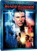

|
 |
| Títol |
Blade Runner, Muntatge final [2007] per PIZARRÍN & rvg (ID: 10067) |
| Gràfic comparatiu de vots |
 |
|
|
|
|
|
|
|
|
|
| 1 |
2 |
3 |
4 |
5 |
6 |
7 |
8 |
9 |
10 |
|
| eLink |
ed2k://|file|Blade%20Runner,%20Muntatge%20final%20 ... |
| Puntua |
Vots: 5 | Puntuació: |
| Detalls |
Mida: 1.25 Gb | Format: AVI |  Historial eD2K Historial eD2K |
| Altres |
Visualitzacions: 521 | Descàrregues: 181 | Comentaris: 0 |
| Enviat |
Per PIZARRÍN el 11/10/2008 |
| Imatge |
 blade_runner_final_cut.jpg (60.7K) blade_runner_final_cut.jpg (60.7K) |
|
 DVD + TDT català - english, per PIZARRÍN & rvg [Mecanoscrit.cat]
TÍTOL ORIGINAL: Blade Runner
ANY: 1982 (The Final Cut): 2007
DURADA: 112 min.
PAÍS: Estats Units
DIRECTOR: Ridley Scott
GUIÓ: David Webb Peoples & Hampton Fancher (Novel·la: Philip K. Dick)
MÚSICA: Vangelis
FOTOGRAFIA: Jordà Cronenweth
INTÈRPRETS: Harrison Ford, Siguin Young, Daryl Hannah, Rutger Hauer, Edward James Olmos, Joanna Cassidy, Brion James, Joe Turkel
PRODUCTORA: Warner Bros. Pictures
GÈNERE: Ciència-Ficció, Acció.
BLADE RUNNER
Kinship! [The Final Cut (2007)]
Pel·lícula atmosfèrica, a cavall (o unicorn) entre la ciència-ficció i el cinema negre. Fascinant.
1) Versió inicial vs. Director's cut
Ridley Scott proposa tres canvis substancials:
- Suprimeix la veu en off explicativa, deixant que l'espectador aporti les seves neurones i emocions. Quelcom que sempre s'agraeix.
- Insereix la seqüència onírica de l'unicorn. Un somni que ens mou, al costat de Deckard (Harrison Ford), a qüestionar la pròpia identitat del policia caça-androides.
- Elimina el tebi happy end imposat per la productora.
2) Director's cut vs. The Final Cut
- Digitalització: detalls i matisos (el foc, els iris, els vidres...). La imatge guanya en nitidesa.
- La banda sonora, mesclada novament, és espectacular.
- S'afegeix una escena (prescindible) de ballarines orientalitzades.
Una posada de llarg per celebrar el 25è aniversari de Blade Runner.
3) Atmosfera
Vangelis, Hopper (Nighthawks). La tenebra sonora i visual.
Un futur envilit.
Un món subterrani i exterior, en el que l'aire lliure està viciat.
(La resta de la crítica pot contar parts de la pel·lícula)
spoiler:
4) La identitat de l'antiheroi
Quan Deckard s'escorre de la biga, Roy (Rutger Hauer) l'agarra del braç i crida "Kinship!" (parentiu, llaç de sang). Curiosament, no apareix la paraula ni la seva traducció en els subtítols.
Per què ens costa tant d'acceptar que Deckard pugui ser un replicant?
- En el llibre de Philip K. Dick, no ho és.
- En la versió inicial de la pel·lícula, en cap moment se suggereix que pogués ser-ho.
- Harrison Ford assumeix el paper d'un policia amb greus problemes de consciència però el seu personatge mai és inhumà. En paraules de Nietzsche, jo diria que és humà, massa humà. M'aventuro a pensar que el propi actor descarta en la seva interpretació la hipòtesi que Deckard sigui un replicant. En què em baso? En res. Pura especulació del meu magí. Encara que és sabut que la sintonia entre l'actor i el director va distar de ser modèlica.
I...
- Aquí està el somni de l'unicorn, amb traces de ser un somni recurrent del blade runner. Les fotos, els records.
- La figureta deixada per Gaff (Edward James Olmos) en l'apartament da a entendre que coneix els secrets més íntims de Deckard. Com és possible, si a penes l'ha tractat? Ha consultat potser els arxius que contenen el misteri de la seva identitat?
Tal com queda tot en la versió definitiva, no albergo dubtes sobre que Scott vol dir-nos que Deckard sí que és un replicant.
El "Kinship!" agònic de Roy tampoc admet polisèmies.
Una altra cosa és que això encaixi en la impressió que ens produeix el personatge.
5) Longevitat
El quid de la qüestió ja està en La Celestina': Ningú és tan ancià que no pugui viure un dia més ni tan jove que no pugui morir demà.
A què tant preocupar-nos pel termini si res és perdurable?
Vull pensar que aquí està el missatge de la cinta.
Ah, i també en la bellesa intemporal de Daryl Hannah!
Servadac
Cinema Fantàstic en català a Mecanoscrit.cat
|
|
|
 |
| Nom d'Usuari |
|
Puntuació |
Data |
|
|


|

|
L'ús d'aquesta pàgina web implica la lectura i acceptació de la Normativa
En línia des del 14 de desembre de 2004, per i per a la comunitat eD2k
Modificacions i disseny per Comparteix © 2004-2011 - País Valencià
|
|
|